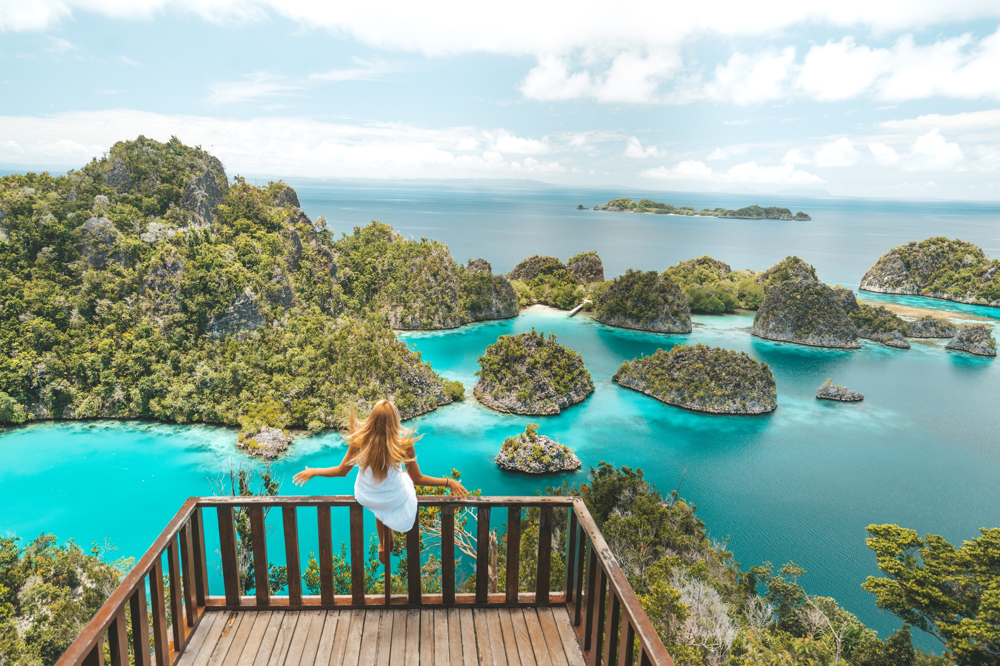
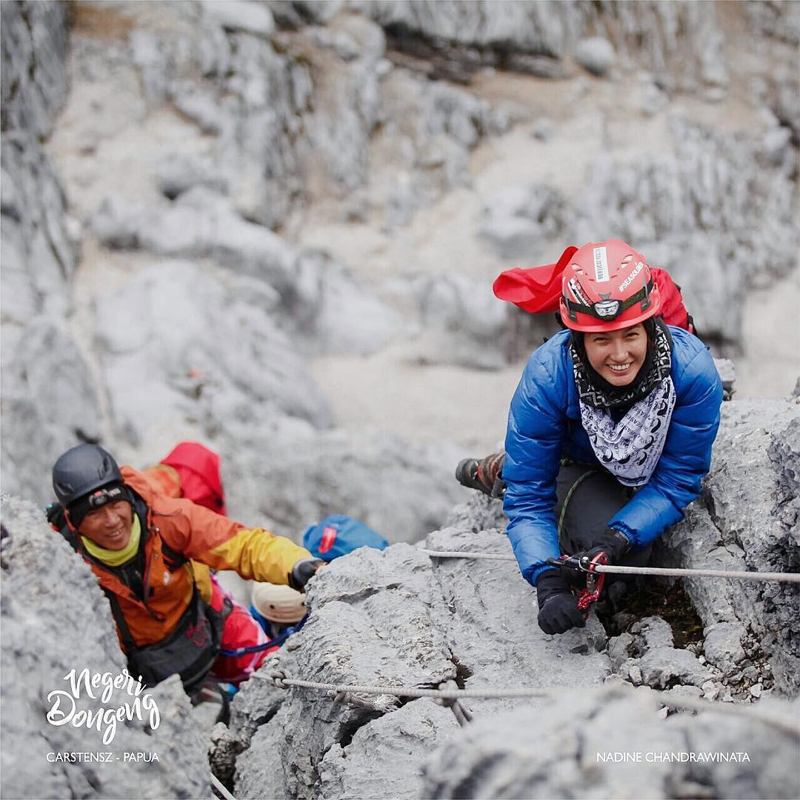
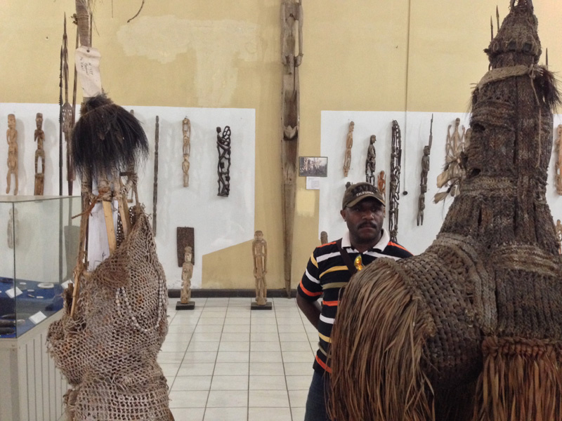

Pantai Blue Point / Pantai Suluban

Bali memang selalu menawarkan objek wisata baru yang tak pernah habis untuk dijelajahi, terutama keindahan pantainya. Nah, salah satu pantai di Bali terbaru yang akhir-akhir ini lagi naik daun adalah pantai Blue Point atau yang sering disebut pantai Suluban.
Pantai ini terletak di Uluwatu, Desa Pecatu, Bali. Pantai ini menjadi primadona bagi para wisatawan, terutama bagi mereka yang hobi surfing. Pemandangan di pantai ini sungguh mempesona. Cocok untuk mengabadikan momen bulan madu Anda bersama pasangan.
Untuk mencapai pantai Blue Point ini agak sulit, harus menuruni beberapa anak tangga yang tanpa pegangan. Tetapi rasa lelah terbayarkan begitu sampai di Pantai Blue Point yang sangat menawan. Banyak wisatawan mancanegara yang berdatangan dengan menenteng papan selancar, konon ombak di sini bagaikan surga bagi mereka.
Lokasi Dan Alamat : Uluwatu, Desa Pecatu, Bali
Peta Lokasi : Klik Disini
Harga Tiket Masuk : –
Cliff Jump Point Nusa Ceningan
Tak hanya bersantai di tepi pantai, traveler muda yang liburan di Bali juga bisa mencoba berbagai wisata ekstrem. Di Nusa Ceningan, ada sebuah tempat dimana traveler bisa terjun bebas dari tebing yang curam ke laut. Berani coba?
Nusa Ceningan merupakan sebuah pulau kecil di Kabupaten Klungkung, Bali. Aneka jenis wisata bisa dinikmati para traveler di sini, termasuk cliff jumping atau lompat dari tebing langsung ke laut di Cliff Jump Point. Aktivitas ekstrem ini cukup populer di kalangan turis lokal dan mancanegara pecinta uji nyali.
Cliff jumping bisa dilakukan di Blue Lagoon, Nusa Ceningan. Lokasinya ada di sisi barat pulau. Di sekitar Blue Lagoon memang penuh dengan tebing yang cukup curam, tapi tetap menampilkan keindahan yang mempesona.
Dari tebing itulah wisatawan bisa menjajal sensasi terjun bebas dari tebing yang curam. Untuk mencobanya, Anda bisa naik ke atas tebing dan langsung saja melompat ke bawah. Adrenalin pasti langsung akan terpacu ketika bersiap melompat dari pinggir tebing.
Sebelum melompat, sebaiknya Anda bertanya dulu pada penjaga di kawasan itu, apakah cuaca dan keadaan ombak memungkinkan untuk melompat. Anda juga harus berhati-hati agar tidak menabrak tebing dan terluka ketika menjajal aktivitas ekstrem tersebut.
Lokasi Dan Alamat : Nusa Ceningan, Kabupaten Klungkung, Bali
Peta Lokasi : Klik Disini
Harga Tiket Masuk : –
Angel’s Billabong

Angel’s Billabong adalah sebuah muara sungai yang terletak di Nusa Penida. Muara sungai ini memiliki permukaan air yang tenang dan jernih serta cerukan yang membentuk kolam-kolam alam yang luar biasa cantik. Siapapun pasti akan langsung ingin nyebur dan berendam seharian disini. Airnya begitu jernih dan segar, pas banget untuk Anda yang lelah setelah seharian berkeliling Nusa Penida.
Untuk dapat menuju ke tempat wisata di Bali terbaru ini tidaklah sulit. Anda cukup datang ke daerah Kabupaten Klungkung, lalu menyebrangi selat Badung untuk menuju ke Nusa Penida. Hanya membutuhkan waktu sekitar 1 jam saja dengan menaiki speedboad dari sanur, Anda akan langsung sampai ke tempat wisata tersebut.
Waktu penyeberangan dengan kapal speedboad akan dimulai dari pagi hari sekitar pukul 07.30 hingga sore hari pukul 16.00 WITA. Jadi jika sudah melewati waktu tersebut tidak ada kapal lagi yang menyeberang menuju tempat wisata tersebut. Untuk menaiki kapal speedboad tersebut Anda akan dikenakan tariff sebesar Rp. 75.000,-/orang.
Lokasi Dan Alamat : Banjar Sumpang, Desa Bunga Mekar, Nusa Penida
Peta Lokasi : Klik Disini
Harga Tiket Masuk : –
Paralayang Di Timbis

Bagi Anda yang hoby dengan wisata ekstrim yang memacu adrenalin, cobain deh paragliding atau paralayang di Timbis. Tahan rasa takut Anda, dan nikmati pemandangan yang tersaji saat paralayang disini. Rasa deg-degan rasanya akan segera sirna begitu melihat keindahan alam Bali dari atas.
Olahraga Paralayang menjadi salah satu tujuan wisata yang menarik di Bali. Tempat terjun Paralayang di Bali terletak di Pantai Timbis dengan jarak tempuh 30 menit dari Kuta. Dengan pemandangan laut lepas yang indah dan pendaratan di pantai putih bersih, menjadikan paralayang sebagai paket wisata terbaru yang sangat menarik selama Anda berada di Bali.
Waktu yang tepat untuk melakukan paralayang ini adalah ketika matahari hendak terbenam. Hal ini karena pemandangan yang Anda dapatkan sungguh mempesona, bukit Timbis seakan tambah cantik ditemani sunset. Jika tidak berani naik paralayang sendirian, maka Anda bisa tandem dengan instruktur yang berpengalaman.
Lokasi Dan Alamat : Timbis, Bali
Peta Lokasi : Klik Disini
Harga Tiket Masuk : –